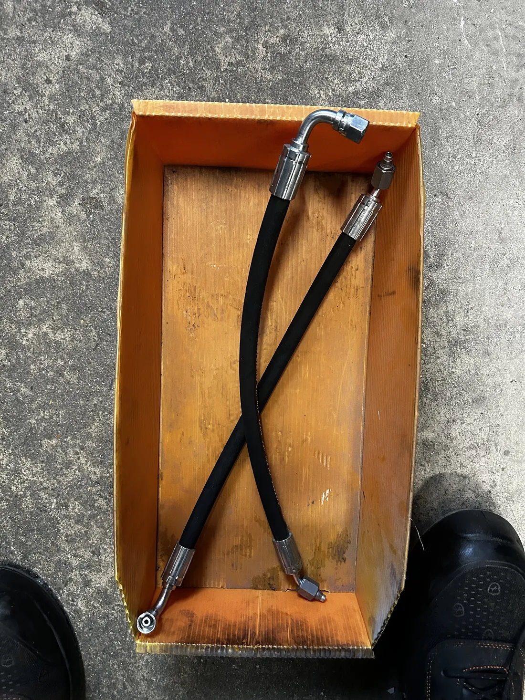
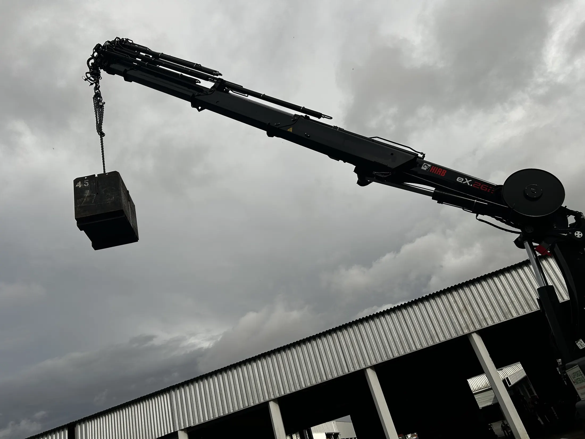
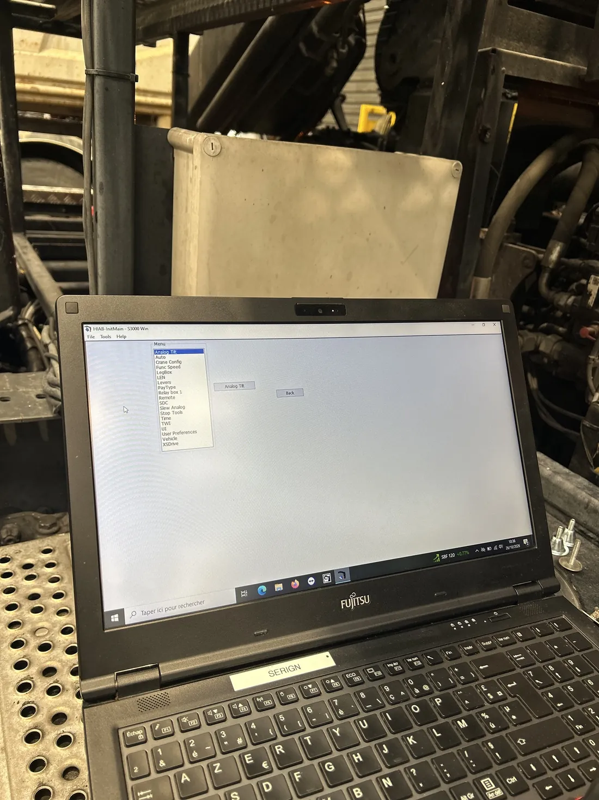
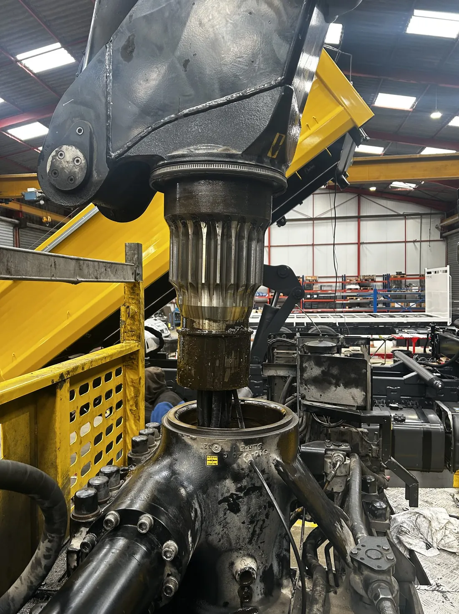
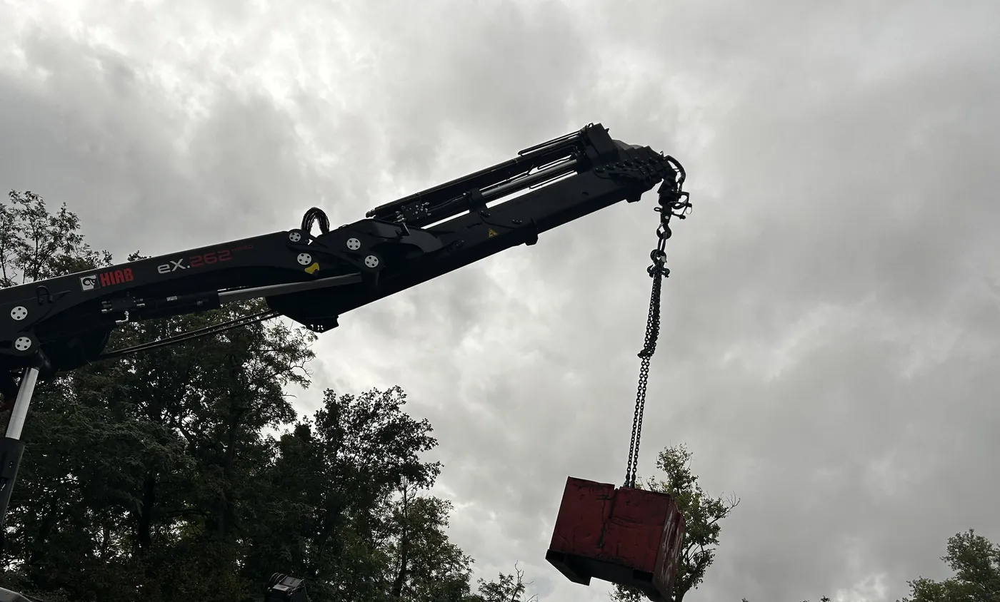
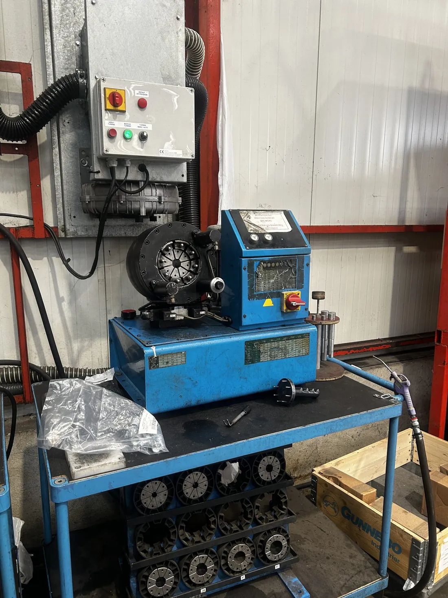

Hydraulique
Garder l'huile propre, sous pression, et à l'intérieur du circuit.

Futur technicien de maintenance. Quand une machine s'arrête, je cherche pourquoi.

Moi, c'est Shalom, 22 ans. La maintenance, je l'ai découverte à l'hôpital de Rodez, en surveillant six robots qui portaient les repas et le linge d'un bout à l'autre du bâtiment. Chaque arrêt était une énigme. J'ai tellement aimé les résoudre que j'en ai fait mon métier.
Aujourd'hui je suis en alternance chez Serignac Services, à Toulouse, sur des grues hydrauliques de camion. De l'huile, du courant, de l'acier : trois façons pour une machine de dire que quelque chose ne va pas.
Ces grues livrent, lèvent et collectent toute la journée. Quand l'une d'elles s'arrête, elle vient ici.


Garder l'huile propre, sous pression, et à l'intérieur du circuit.

Le code défaut dit où regarder. Pas toujours quoi changer.

Démonter, contrôler, remonter. Au pont roulant quand c'est lourd.

Réviser avant la panne, et essayer en charge avant de rendre la machine.
Une pompe pousse l'huile, un distributeur l'oriente, un vérin la transforme en force, et un calculateur surveille le tout. Cliquez sur un numéro.
Serignac Services · Pôle Formation UIMM Occitanie
En entreprise, les grues hydrauliques : dépannages, révisions, diagnostic. Au centre, ce qu'il y a derrière : électrotechnique, automatismes, mécanique, méthodes de maintenance.

Centre Hospitalier de Rodez
Six robots Swisslog qui ravitaillent tout l'hôpital. Quand l'un s'arrête : trouver la cause, le relancer, tracer l'incident, passer le relais à la maintenance si besoin.

Lycée Louis Vicat · Rodez
Deux ans à lire des plans, dimensionner, métrer, travailler en CAO. J'en garde la rigueur, et le réflexe d'ouvrir la documentation d'abord.
Lycée Alexis Monteil · Rodez
Là où tout a commencé : dessiner une pièce sous SolidWorks, l'imprimer, câbler un Arduino, et voir l'idée bouger.
Une question, un projet, un conseil ? Écrivez-moi, je réponds vite.